군대와 먹을 것 관련 잡담
게시: 2021-03-24T22:55:07+09:00
<맛있다고 하면 촌티?> 기내식과 C-ration은 무조건 까야지 혹시라도 '먹어보니 맛있던대?' 라고 말하면 안되는 모양. 그런 C-ration 중에서도 모든 사람들이 공통적으로 최악이라고 하는 메뉴가 'Ham & lima beans' 라는 메뉴인데, 심지어 아래와 같은 캡션이 붙음. When GIs gave rations to hungry civilians in Korea, the Koreans would throw this particular meal back at them. Troops added cans of cheese sauce and/or cracker crumbs to try to make this war crime palatable. (미군들이 배고픈 한국 민간인들에게 이 C-레이션을 줄때도, 한국인들은 이 '햄&리마콩'이 나오면 도로 미군에게 던져버렸다. 미군 부대에서는 이 전쟁범죄에 가까운 메뉴를 그나마 먹을 만하게 만들기 위해 치즈 소스 및 크래커 부스러기를 집어넣곤 했다.)
** 군대 경험담치고 믿을 말 없다더니... ** 근데 비주얼이 좀 당황스럽긴 하구나... (아래 사진이 ham & lima beans. 오른쪽이 C-레이션 깡통 뜯은 것) ** 제가 카투사할 때는 MRE 중에서 Chicken a la king이 제일 인기가 없다고 했음 (먹어봤는데 먹을만 하더라는 것은 비밀)
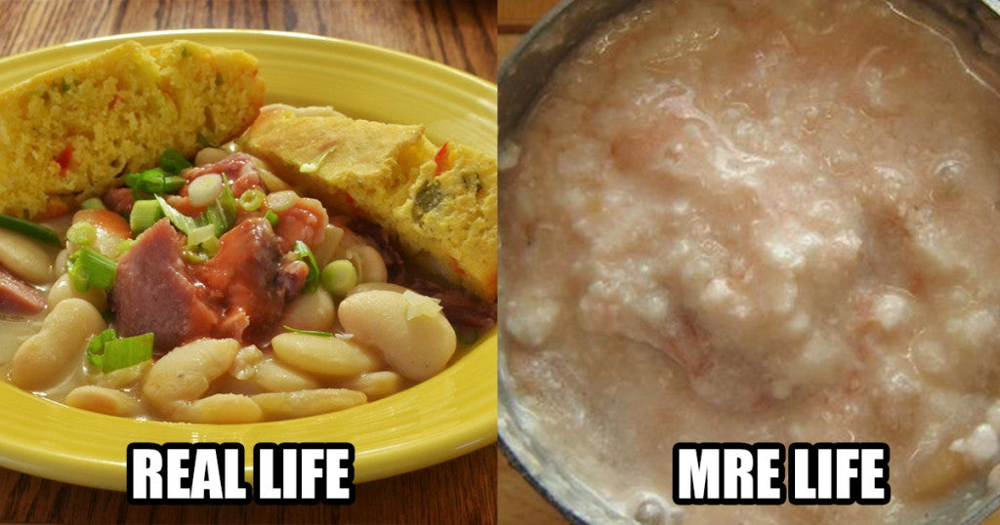
<C-레이션 속의 건빵과 오레오 표면에 새겨진 문양> 세계에서 가장 큰 베이커리를 가진 회사는 바로 나비스코(Nabisco). 시카고에 17만제곱미터, 대충 6만평 규모의 베이커리 공장을 보유. 이 회사는 1792년 Pearson & Sons Bakery이라는 이름으로 설립되어 항해용 건빵(biscuit)을 구워 팔았음. 이후 이런저런 베이커리들과 인수합병을 거치며 점점 규모가 커지다가 1898년 National Biscuit Company (국립 건빵 회사)라는 거창한 이름의 회사를 창립. 제1,2차 세계대전 중에는 이 N.B.C라는 다소 멋대가리 없는 이름으로 전투식량에 들어가는 건빵을 공급하다가 1948년 마침내 똑같은 뜻이지만 좀더 운율이 좋은 Nabisco라는 이름으로 개명. 아래 사진처럼 제1차 세계대전 중에는 "Made as he says"(정부가 시키는 대로 만들었어요)라는 표어 아래 밀가루와 설탕은 군납용 비스킷을 만드는데 쓰고 민간용 과자와 비스킷 등에는 호밀가루, 보릿가루 등에 설탕 함량을 대폭 줄인 제품을 공급하기도. (아래 첫번째 사진) 나비스코의 상징 문양은 저렇게 기울어진 타원형에 안테나 같은 것이 붙은 것인데, 그 뜻은 중세 이탈리아 인쇄공 길드의 "악과 물질에 대한 선과 영의 승리"를 뜻하는 문양에서 따왔다고도 하고 "예수님의 구원"을 뜻한다고도 하고 그냥 "곡식 낟알에 대한 키질"을 뜻한다고도 함. (아래 두번째 사진) 나비스코의 대표적인 제품에는 리츠 크래커와 오레오 쿠키 등이 있는데, 오레오 쿠키의 시커먼 표면에 새겨진 문양은 자세히 보면 이 나비스코의 상징 문양을 약간 변형시킨 것임. (아래 세번째 사진)
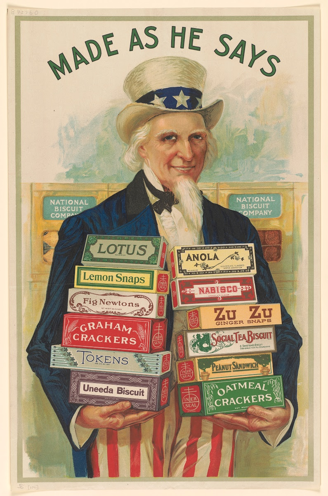 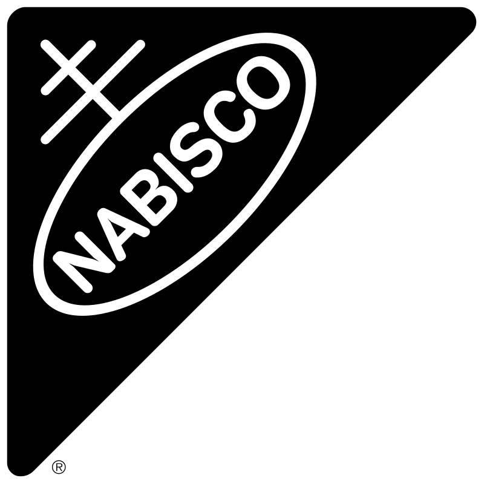 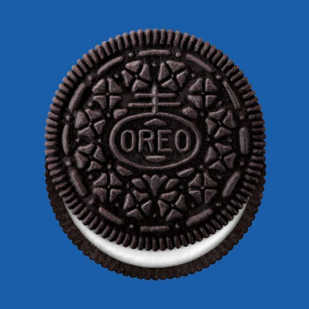
<투르크 병사들도 잘만 쳐묵쳐묵> Corn beef (corned beef)는 옥수수와 쇠고기를 섞은 것이 아니라 소금에 절인 쇠고기를 삶은 것. "Corn"에는 동사로 소금에 절인다는 뜻도 있음. 원래 corn beef는 괜찮은 쇠고기 덩어리로 만든 음식이지만 숭악한 영길리놈들은 corn beef 통조림을 만든답시고 잘게 간 쇠고기찌꺼기에 젤라틴을 넣어 통조림을 만듬. 이 통조림과 건빵(비스킷)은 19세기말 보어 전쟁 때부터 WW2까지 영국군의 야전 주식으로 사용됨. 이걸 대부분 beef bully 또는 bully beef라고 불렀는데, 이건 프랑스어 boeuf bouilli (뵈프 부이이, 삶은 쇠고기)에서 나온 이름. 맛에 대해서는 다들 욕을 하기는 했지만 욕을 하면서도 잘들 쳐묵쳐묵. 염장 쇠고기보다는 훨씬 낫고 악명 높은 멀건 스튜 머카너키보다도 맛이 좋은데다 무엇보다 쇠고기임. 아무리 영국애들이 고기 많이 먹는다고 해도 쇠고기는 비싼 것이고 서민 가정에서는 자주 못 먹었음. 특히 불리 비프는 차가운 상태에서도 스프레드처럼 잘 퍼졌으므로 뻑뻑한 건빵 위에 발라먹기에도 좋았음. WW1 갈리폴리 반도에 상륙하여 투르크군과 대치했던 영국/호주군도 잠시 암묵적인 휴전 상태가 될 때, 이 불리 비프 깡통을 투르크군의 포도 및 오렌지와 많이 교환해 먹었다고. 원칙적으로 불리 비프는 더러운 영길리가 도축한 것이므로 할랄 푸드가 아니고 따라서 투르크군은 먹으면 안 될 것 같은데 투르크군도 잘만 쳐묵쳐묵...
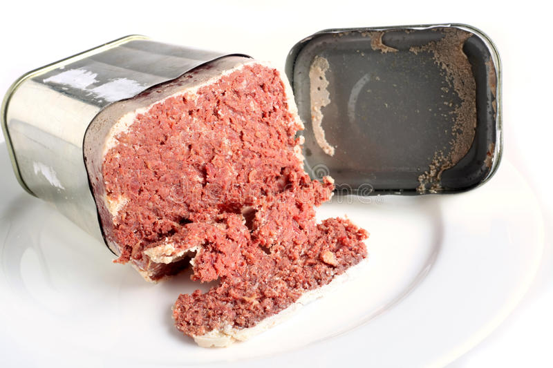 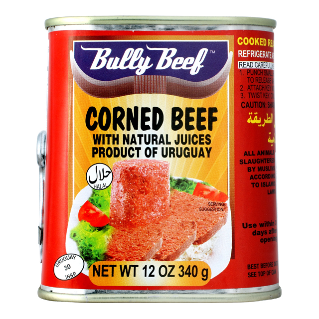 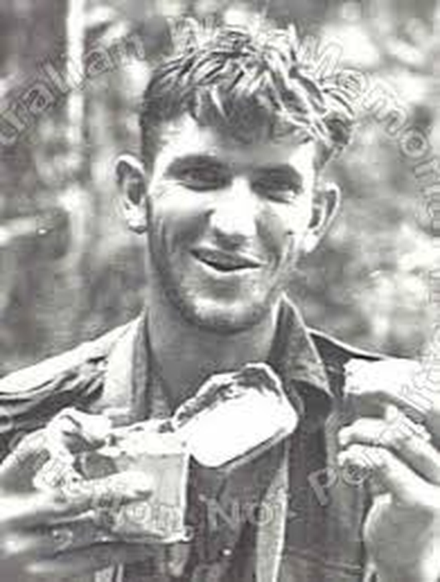 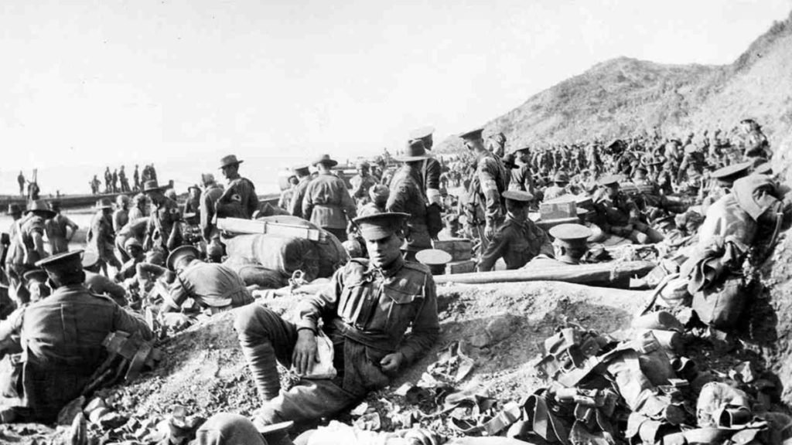
<D-Day 아침식사 메뉴는?> 니콜라스 홀트 주연의 2017년 영화 "Rebel in the Rye"는 짐작하시다시피 '호밀밭의 파수꾼'을 쓴 J.D. Salinger의 전기 영화입니다. 샐린저가 WW2 때 징집되어 노르망디 상륙을 기다리며 영국에 있을 때 어느날 mess hall에 가보니 스테이크가 배식되어 동료 병사들이 x 씹는 표정으로 먹고 있는 것을 보고 '내일이 D-day'라는 것을 알게 되는 장면이 나옵니다. 그 장면을 보고 제게 든 생각은 (1) 아, 쟤들도 전투를 무서워하는구나 (생각해보면 당연한건데) (2) 정말 D-day 전날 병사들에게 스테이크 돌렸나? 문득 궁금해서 열심히 검색해보니 딱히 D-day 전날 스테이크 먹였다는 소리는 없는데, 대신 D-day 당일 아침식사로 "병사들의 스태미너를 위해" 스테이크와 달걀을 먹였다는 기사는 찾았습니다. 그러나 사령부의 영양학적 결정은 아무 소용 없었던 것이.. 상륙정에서 다들 토했다고 합니다.
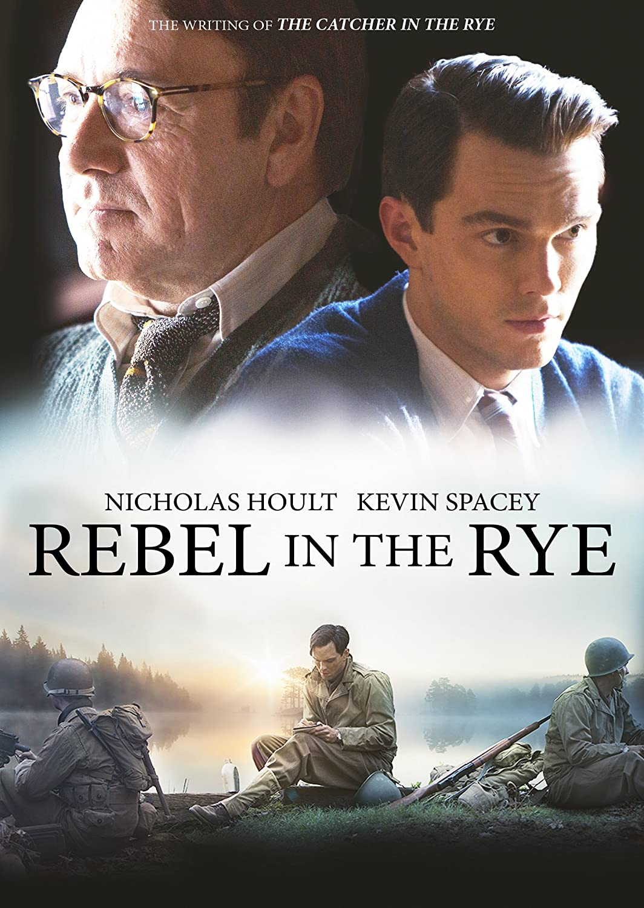 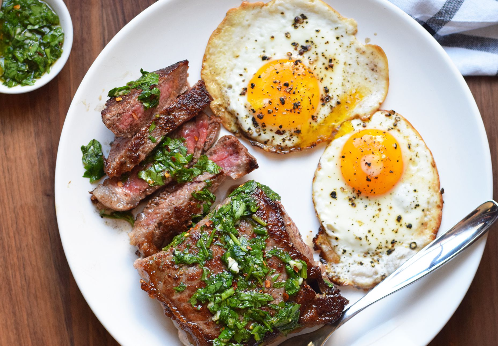
<19세기 식품업계의 오픈소스 팹리스 기업> 아래 사진들은 리비히 카드(Liebig card)라는 것인데 쉽게 요약하면 '오뚜기 수프 광고 카드'. 부이용 큐브, 즉 고기국물 추출물을 만드는 Liebig company라는 영국회사에서 1870년부터 광고용으로 만든 그림 카드인데, 초기에는 이거 모아서 오면 쿠폰처럼 이 회사의 고기국물 큐브 제품을 받을 수 있었음. 그런데 의외로 그림카드의 그림 질이 매우 좋고 내용이 풍부해서 꽤 인기가 있었던 모양. 메이저리그 야구카드처럼 수집가들의 수집 대상이 되었음. 신기한 건 이것처럼 프랑스어 버전이 많다는 것. 아래 첫사진은 1900년 의화단의 난 때 중국 톈진을 침공한 영국 및 연합군의 식사 시간을 그린 것인데, 왼쪽 구석에는 깨알같이 고기국물 제품의 광고가 실려있음. 참고로 Liebig company는 영국회사이고 Liebig는 고기 추출물 만드는 법 만든 독일 화학자. 리비히는 자기의 제조법을 open source로 다 풀었을 뿐이고 그의 제조법을 읽고 회사를 만든 사람은 유럽에서 일하던 Giebert라는 독일인 철도 엔지니어. 공장은 영국도 독일도 아닌 우르과이에 세움. 남미에서 수출된 고기추출물 제품이 도착하는 항구도 런던이 아니라 네덜란드 안트베르펜. 주주들도 대부분 유럽의 다국적 투자가들. 본사가 영국 런던에 있었던 것은 아마도 자본조달이 쉬었기 때문인 듯. 어떻게 보면 오픈 소스를 이용한 설계업체와 제조업체가 분리된 진정한 의미의 현대적 다국적 기업.
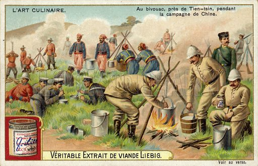 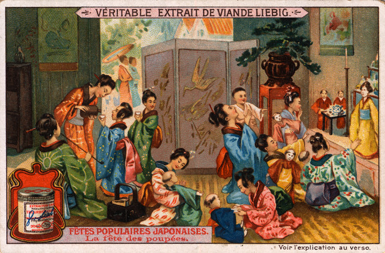 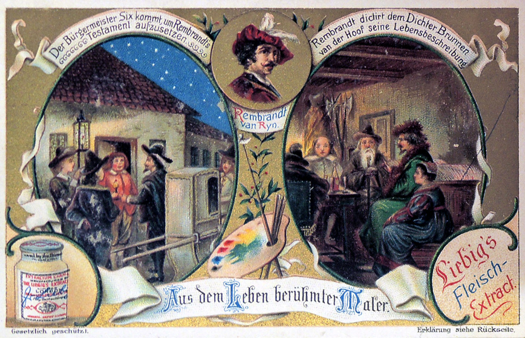
** 페북에 올렸던 토막 이야기를 엮어서 올렸습니다. 목요일은 원래 재탕 많이 올려요.